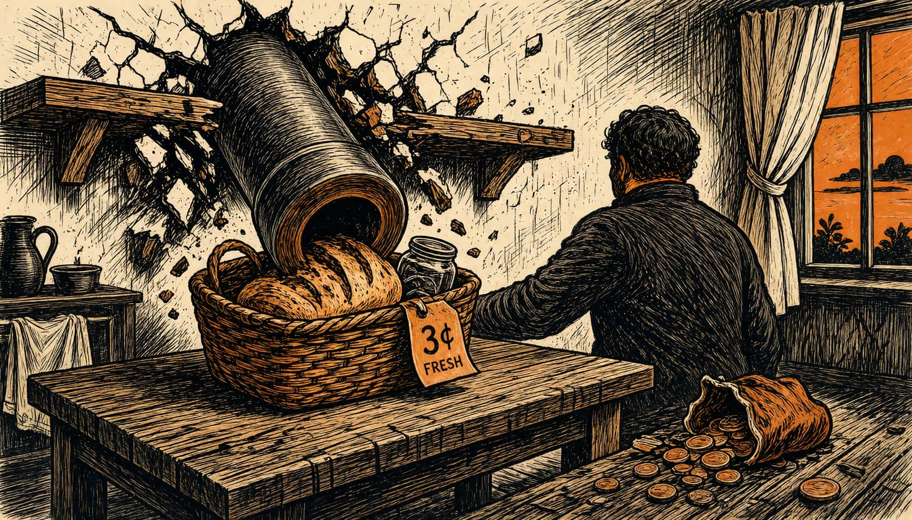

Opinion
A war Massie says nobody voted for, costing us all
Impeachment articles charge Congress never authorised the war on Iran, the $47bn bill is landing in the cost of living, and Europe should hold back defence money until Congress is back in charge of it.

Pete Hegseth was one of the loudest voices for the war on Iran, and the bill, more than $47 billion, is landing in the cost of living. This month he faced a choice set by Representative Thomas Massie: resign, or face an impeachment vote in the House. White House officials have him on the chopping block, and Donald Trump stood by him in public. We say what our own governments should say: until Congress is back in charge of this war, European defence money should not flow to the department running it. And Congress should take back the power to pay for it or refuse it.
Start with the mandate, because Massie says there was none. Hegseth was one of the leading voices for intervention inside the White House before the war began, and he defended the operations as they dragged far beyond the two or three days forecast. Massie's impeachment article of September 2026 charged him with waging the war with no declaration, no statutory authorisation, no attack on the United States and no imminent threat, against Section 2(c) of the War Powers Resolution of 1973. A second article charged that he kept forces in the fight after both Houses of Congress directed, through H. Con. Res. 86, that they be withdrawn. A third charged that the fighting ran past the 60-day termination period and the withdrawal window altogether. That is a department Massie charges with refusing to stop, twice.
Now follow the money, because it is our money too in the end. The bill is a big one: $47 billion, about €42 billion at the euro rate of 5 November 2026. That spending was reported to worsen the cost-of-living crisis and to push voters away, which helped decide the midterms on 3 November. Inflation does not respect an ocean. A war started with no plan to manage its consequences, which CNN reports many Republicans believe Hegseth pushed, is the kind of spending we say worsens the cost-of-living crisis. Several Republicans accused Hegseth of escalating with little evidence the attacks could force Iran into submission. On the sea lanes themselves, the September article charged his department with replacing maritime law enforcement with lethal strikes that left at least 221 people dead, including survivors on the water. Trade through those waters pays the wages in our ports.
Those who say this is an American family quarrel, and that allies have no business lecturing Washington on its constitution, have a point worth hearing straight. Massie's articles charge Hegseth with breaking an American law, the War Powers Resolution of 1973, and no European minister sits in the House. Setting conditions on what we support is not meddling. It is what partners owe their own voters.
The pressure does not come only from us. Seven Republicans already voted to rein in the war powers, two House Republicans expect the impeachment resolution to pass if it gets a vote, and on Capitol Hill the knives are out for Hegseth after the midterm defeat. A European condition would land with allies inside Washington, not against it. Trump defends him and the Pentagon denies his removal. Hegseth himself is asking lawmakers for more funding for the Department of War.